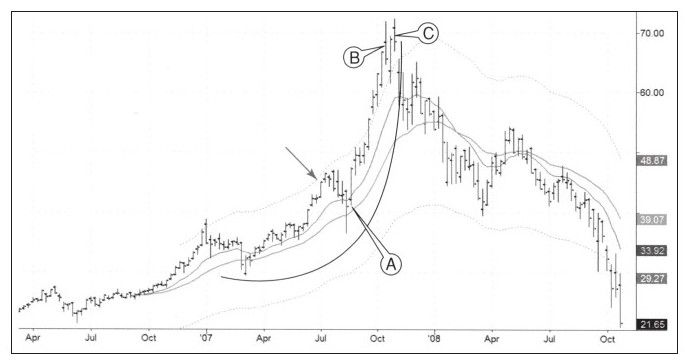

情绪指标显示市场大众的情绪状态，包括咨询业看多/看空比率、期权买卖比率，此外还有一些辅助识别趋势和顶底[1]、追踪市场大众心理状态的指标。媒体情绪是情绪指标中最简单的指标之一。当多数媒体极力向大众宣传价格走势时，聪明的交易者就开始寻找趋势反转的时机了。
2007年夏天我飞往亚洲为一家国际机构授课，在从东京飞往新加坡的飞机上，《金融时报》的一条内容引起了我极大的关注：驻上海的通讯员报道说当地服务业劳工缺乏，因为酒店女仆和洗碗工都去炒股了。
我认为我听到了警钟声：依赖铺床和刷碗为生的人大量去炒股，股市绝对不是为他们这类群体设立的。这篇文章让我想起了20世纪早期最著名的股票做手之一伯纳德·巴鲁克，他在1929年股灾之前卖掉了所有股票，其清仓灵感的来源是有个擦鞋工向他推荐了一只股票。如果社会最底层的人都开始进入市场投机时，你该知道参与赌博游戏的人即将穷尽，牛市也即将见顶。
我把这份报纸带到了新加坡的会议现场，并为现场听众借了个铃铛，现场听众都是资金管理人，但我觉得那个铃铛对我的意义更大，它让我警醒。
如图9-2所示，箭头是我演讲的日期，在我做完演讲的第二周，中国市场开始下跌，但在真正的暴跌来临前，市场反转并上涨了60%——人类的灵魂可以变得比任何人想象得更黑暗或更光明。情绪指标是个不错的基础指标，但不能把它作为精准的入场时机指标。

图9-2中的弯曲弧线显示在牛市接近结束的时候，中国股票指数走势像抛物线，这种模式是极端情绪的特征。如果你发现你持有的股票走出极端走势，那么就系紧安全带，丢掉技术指标，并把你的止损移动到前一周的最低点上。
本书前面提到的组合系统在本图中提供了很多有用的信号。EMA指标在极端行情中会发生钝化，快速EMA的方向已经不再上升但MACD柱却显示市场非常强烈。在单根K线中如果二者都上升，系统就把它标记为绿色；如果都下跌，系统标记为红色。当两者一个上涨一个下跌时，K线颜色变为蓝色。
如果9-2所示，在A点时，系统变绿，表明价格正在上升。股价再没有创出新低，然后涨了大约9周。在B点时，系统变蓝，表明牛市乏力，价格又涨了一周后系统变绿，之后的一周也就是在C点时，系统再次变蓝。请注意K线C收盘接近最低点但创出了历史新高。在技术分析中，向上假突破是最重要的看跌指标。那根K线出现后中国市场大幅下跌，市值跌去50%，期间没有出现特别明显的反弹。在跌去50%之后市场出现反弹，而后再度创出新低。随着中国股市的暴跌，报纸上再未出现上海缺乏劳工情况的报道。
[1]我最喜欢在www.sentimentrader.com网上看市场情绪指标。